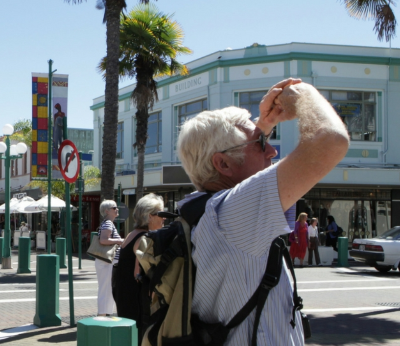

DESKRIPSI
Makasar
Ibu kota Art Deco di Selandia Baru
Hanya sedikit tempat di dunia yang memiliki representasi luas gaya
Stripped Classical, Spanish Mission, dan Art Deco dalam area terbatas
tersebut, itulah sebabnya kota ini pantas dikenal sebagai Ibukota Art
Deco. Napier adalah rumah bagi banyak kilang anggur berkualitas,
restoran, bar, dan kafe yang luar biasa. Toko-toko butiknya wajib
dikunjungi dan Marine Parade yang telah diubah dengan indah layak untuk
dikunjungi.
BERSEPEDA
Hawke's Bay adalah kawasan yang dibuat untuk bersepeda
Hawke's Bay adalah kawasan yang dibuat untuk bersepeda. Kilometer jalan
setapak yang terawat baik,pemandangan indah, dan banyak kesempatan untuk
berhenti dan mengisi bahan bakar!
Hawke's Bay Trails - salah satu Great Rides resmi di Selandia Baru -
membentang sepanjang 200 km, menghubungkan kilang anggur pemenang
penghargaan, kafe unik, pub pedesaan kuno, dan gerai pengrajin
HIBURAN
'Apakah kamu tidak terhibur?'
Sedikit trivia pertama: Untuk 10 poin, kutipan di atas berasal dari film apa? Saat Anda memikirkannya, luangkan waktu untuk membaca dengan teliti pilihan Hiburan ini. Baik itu pertunjukan di Napier Municipal Theatre, atau menonton film di bioskop lokal, Anda akan menemukan banyak hal untuk dinikmati
PS: Itu dari Gladiator, dibintangi oleh Russell Crowe kita sendiri (itu benar Australia, dia milik kita).
KEAJAIBAN ALAM
Hawke's Bay adalah kawasan dengan bentang alam yang beragam dan menakjubkan.
Hawke's Bay mungkin berhutang budi pada Ibu Pertiwi. Garis pantai kami dipenuhi dengan pantai keemasan, dataran subur kami adalah rumah bagi banyak kebun anggur dan kebun buah-buahan, dan wilayah kami adalah rumah bagi fitur alam ikonik seperti Danau Waikaremoana dan Puncak Te Mata. Namun, jangan percaya begitu saja - sebaiknya Anda datang dan memeriksa sendiri semuanya.
EVENT/ACARA
Hawke's Bay adalah destinasi acara sepanjang tahun yang menawarkan sesuatu untuk semua orang.
Ayo rayakan acara Art Deco, Makanan & Anggur, Musik dan Olahraga terbaik, dan masih banyak lagi. Gunakan pencari acara di bawah untuk menemukan acara apa yang sedang berlangsung selama kunjungan Anda.
ACARA PERNIKAHAN
Sebuah destinasi dengan keindahan sepanjang tahun dan banyak sinar matahari.
Malam musim panas yang sejuk, hari-hari musim dingin yang cerah, serta
anggur dan makanan pemenang penghargaan akan memberikan keadilan bagi
hubungan cinta apa pun.
Dengan kumpulan profesional pernikahan berbakat di Hawke's Bay yang siap
mengurus setiap detail berharga, lanjutkan... menikahlah di Hawke's Bay
MAKANAN
Dengan banyaknya restoran terbaik di Selandia Baru, acara kuliner ikonik, dan berlimpahnya hasil bumi segar, wajar jika dikatakan bahwa makanan sudah ada dalam DNA kita
Mulai dari santapan santai hingga santapan mewah, makan malam degustasi, atau sekadar suguhan manis, Anda dijamin akan menemukan sesuatu yang akan membuat lidah Anda berterima kasih.
TUR
Hawke's Bay memiliki bisnis tur pemenang penghargaan yang menyediakan pengalaman bagi kelompok kecil atau besar. Baik itu berjalan-jalan berpemandu di sekitar kilang anggur dengan mobil atau sepeda, atau tur pemandangan yang menyoroti hal-hal menarik di kawasan ini, kami siap membantu Anda.
MINUMAN BAR&PUB
Waktunya untuk menyegarkan diri?
Setelah seharian bersepeda atau hiking di Hawke's Bay, sudah sepantasnya Anda menghadiahi diri sendiri atas usaha Anda dengan minuman dingin di salah satu bar atau pub kami. Dari 'pub Kiwi' klasik, hingga bar gang yang apik, Anda akan menemukan tempat minum yang sempurna untuk memenuhi kebutuhan cairan Anda
RENTAL MOBIL
Rencanakan petualangan Anda dan sewa mobil. Berjalan sesuai keinginan Anda dan rasakan kebebasan menjelajahi wilayah ini dengan mobil sewaan